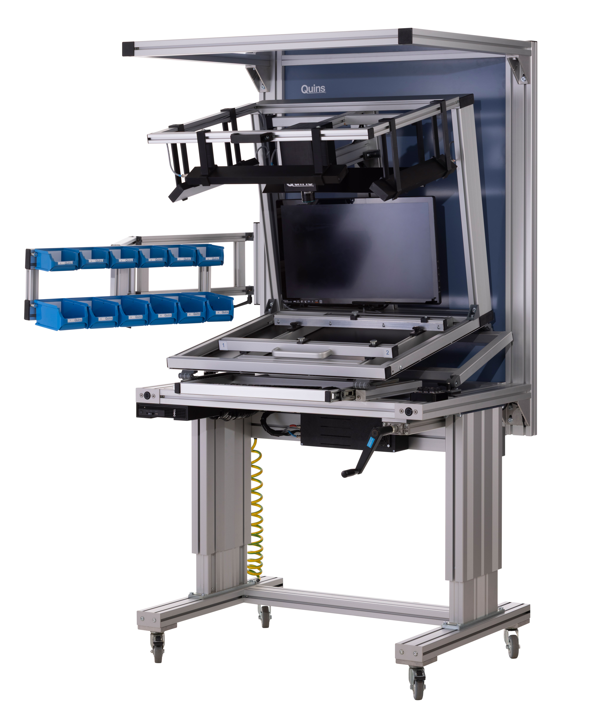

THT Assembly · Assembly Assistance · Automatic Final Inspection
QUINS Mount: THT Assembly Assistance System with Automatic Final Inspection
Now with interactive display
QUINS Mount supports employees in achieving low-error, traceable THT assembly of electronic assemblies. The system visually guides users step by step through the assembly process, clearly displays components and positions, and enables automatic final inspection right at the workstation.
This turns manual THT assembly into a structured, safe and documented process – ideal for electronics manufacturing, THT prototyping, training, production aids and ergonomic assembly workstations.
THT Assembly with Guidance · Automatic Final Inspection · 100% Documentation · Ergonomic Workstation · ESD-Safe · Fast Setup · Mobile Use · Made in Germany

In short
QUINS Mount is a THT assembly assistance system for electronic assemblies. It visually guides employees through manual THT assembly, supports correct component positioning, and enables automatic final inspection with documentation. Typical applications include THT manufacturing, THT prototyping, training, inclusive workstations, and electronics production with changing products or staff.
Model loading...
Quins Mount is an assistance system specifically designed for your needs in THT assembly with automatic guidance and logging.
With great comfort and ergonomic adjustment options.
Discover all features and benefits that make Quins Mount your indispensable work partner.
↓
Individual Inclination
Optimize your workplace with our tilt-adjustable work surface.
With stepless adjustment, you'll always find the perfect position for maximum comfort and productivity.
The robust construction ensures stability at any angle, while intuitive operation enables quick adjustment.
Height Adjustability
Work flexibly sitting or standing with the stepless height adjustment of our work surface.
The ergonomic design enables seamless switching between different work positions, promoting a healthy, dynamic way of working.
The robust mechanism ensures safe and stable adjustment at any desired height. Perfect for an active workday.
Adjustable Storage Arm
Increase your work efficiency with the integrated adjustable arm that
optimally positions components and keeps them within reach.
The thoughtful storage system enables comfortable and precise assembly without having to leave your work position.
The arm flexibly adapts to different workflows, reducing movement effort and fatigue.
Ideal for assembly, mounting, and manufacturing work where precision and comfort are crucial.
Gallery
What is QUINS Mount?
QUINS Mount is a THT assembly assistance system for the manual assembly of electronic assemblies. It combines visual guidance through the assembly process with an ergonomic workstation and an automatic final inspection.
The system shows employees which component needs to be assembled at which position. This makes THT assembly simpler, safer and more traceable – regardless of whether experienced specialists, new employees, assistants or trainees are working at the station.
After assembly, QUINS Mount supports the inspection of the assembly. Errors such as missing, incorrectly inserted, rotated, reversed-polarity or misplaced THT components can be detected and documented directly.
Making THT assembly simpler, safer and more traceable
QUINS Mount was developed for companies and institutions that want to reliably assemble THT components and secure the process directly at the workstation. The system is suitable anywhere manual assembly needs to be not only fast, but also reproducible, documented and ergonomic.
Typical applications:
THT assembly of electronic assemblies
THT prototyping and sample production
Manual assembly of circuit boards
Assembly assistance for skilled workers
Assembly assistance for new employees and assistants
Visual guidance during THT assembly
Automatic final inspection after assembly
Documentation of assembly and inspection steps
Training and education in electronics manufacturing
Supported workstations in inclusive or rehabilitative facilities
Ergonomic assembly workstations for recurring THT tasks
QUINS Mount helps reduce rework, detect assembly errors earlier, and pass only inspected assemblies on to the next production step.
Avoid and directly control THT assembly errors
Errors in manual THT assembly are often caused by mix-ups, incorrect positions, overlooked components or unclear work instructions. QUINS Mount supports employees during the assembly process and helps avoid typical errors early on or detect them during final inspection.
Typical assembly errors
Component missing
Component inserted incorrectly
Component at the wrong position
Component rotated
Component reversed polarity
Component not fully inserted
Component value mixed up
Pin bent
Extra component assembled
Wrong circuit board version used
Typical process errors
Assembly step skipped
Incorrect assembly sequence
Unclear component assignment
Missing inspection before soldering
Missing assembly documentation
Unnecessary rework after soldering
Serial errors due to unnoticed mis-assembly
Why inspection before soldering matters
Errors in THT assembly often cause significant rework after soldering. Missing, incorrect or reversed-polarity components then have to be laboriously located, desoldered, replaced and re-inspected.
QUINS Mount therefore supports employees directly at the assembly workstation: employees are guided visually, the assembly can be inspected automatically, and only inspected assemblies move on to the next production step.
Why QUINS Mount?
Visual guidance for safe THT assembly
QUINS Mount clearly shows employees which component needs to be assembled at which position. This makes manual assembly easier to understand, safer and less dependent on experience or paper instructions.
Automatic final inspection at the workstation
After assembly, the assembly can be inspected directly. Irregularities become visible before the assembly is passed on or soldered. This reduces rework and increases process reliability.
100% documentation
QUINS Mount supports traceable documentation of the assembly and inspection process, helping with quality assurance, traceability, training and internal approval.
Fast and easy setup
The system is designed for quick productive use. New products, variants or assembly tasks can be set up without complicated programming effort.
Intuitive operation
The operation is designed so employees can quickly work with the system – supporting specialists, assistants, trainees and new employees alike.
Ergonomically adjustable
QUINS Mount offers an ergonomic workstation with adjustable working position. Depending on the version, height, tilt and material supply can be tailored to the respective work process.
Mobile and flexible use
Depending on the variant, the system can be used mobile in different areas of production – ideal for changing products, prototyping, training or flexible manufacturing cells.
ESD-safe for electronics manufacturing
QUINS Mount is designed for use in electronics manufacturing and supports ESD-safe work processes.
Immediate relief for employees
Through clear guidance, structured assembly and automatic inspection, QUINS Mount reduces search effort, uncertainty and inspection effort in everyday work.
How THT assembly works with QUINS Mount
1. Prepare assembly and placement data
The circuit board and the associated assembly task are prepared in the system. Components, positions and inspection steps can be provided to the workstation in a structured way.
2. Provide components
The required THT components are prepared at the workstation. The adjustable storage arm supports a within-reach, well-organized material supply.
3. Start visual guidance
QUINS Mount guides employees through the assembly process. The visual display shows which component needs to be assembled next and where it is placed on the assembly.
4. Assemble THT components
Employees insert the components step by step. The clear visual guidance reduces the risk of mix-ups, skipped positions or incorrect orientation.
5. Perform automatic final inspection
After assembly, the assembly is inspected directly. Visible deviations such as missing, misplaced or reversed-polarity components can be detected before the assembly moves to the next process step.
6. Document the result
The assembly and inspection process can be documented, creating traceable inspection results for quality assurance, traceability and internal process approvals.
Ergonomic assembly workstation for THT processes
THT assembly requires concentration, repeat accuracy and a good working position. QUINS Mount therefore combines assembly assistance with an ergonomic workstation concept.
Individual tilt
The tilt-adjustable work surface enables comfortable positioning of the assembly. Employees can adjust the work surface to suit the task, allowing more relaxed, precise and productive work.
Height adjustability
Depending on the version, QUINS Mount can be used sitting or standing, supporting dynamic work, changing employees and ergonomic working conditions in production.
Adjustable storage arm
The integrated storage arm brings components and work materials into a within-reach position, reducing unnecessary movement and supporting a clean, efficient assembly process.
Suitable for different employees
QUINS Mount is suitable for experienced specialists as well as new employees, trainees or supporting roles. Visual guidance lowers the entry barrier and makes THT assembly easier to follow.
QUINS Mount Variants
QUINS Mount is available in different versions, so the workstation fits your specific production situation.
QUINS Mount Table Top
The table-top variant is suitable for stationary workstations where a compact, non-height-adjustable solution is desired. It is ideal for fixed assembly stations, training, prototyping or clearly defined THT work areas.
QUINS Mount Mobile System
The mobile system is height-adjustable and flexible to use. It is especially suited for production with changing workstations, different employees or variable products.
Not sure which variant fits your production? We're happy to advise you based on your assemblies, workstation situation and THT processes.
Features
Technical Details THT
Dimensions
Standing height: 1,94m
Sitting height: 1,8m
1m (with arm 1,38m) x 0.9m x Height (WxDxH)
Weight
83 kg
Image Unit
20,44 MP Camera with CMOS sensor (Sony) with 16 mm 1.1 lens
Max. resolution
400 dpi
Max. image size
340 x 420 mm
Max. component size
380 x 600 mm
Troughput height
391 mm
Capture speed
1 ms
Illuminations
slanted light LED modules
Power consumption
120 W
Network
• RJ45 • Dual-Band Wireless-AC 8260 Wi-Fi
Operating System
Windows 11, 64-bit Professional
Do you have special requirements for assembly size, workstation height, material supply or documentation? We'll configure QUINS Mount to fit your THT process.
QUINS Mount is suitable for all companies and institutions that manually assemble THT components and want to make the process safer, easier to understand and better documented.
Typical users:
Electronics manufacturers
EMS providers
Assembly houses
THT manufacturing
THT prototyping and sample production
Quality assurance in electronics manufacturing
Technical universities and colleges
Vocational schools and educational institutions with an electronics focus
Vocational rehabilitation centers
Integrative training facilities
Workshops with supported or inclusive workstations
Companies that want to onboard new employees into THT processes more quickly
QUINS Mount is especially helpful when THT assembly should not only be carried out, but also guided, inspected and documented.
Software
Tailor-made extensions.
QUINS Mount unfolds its strength together with the QUINS software. The software supports visual guidance, automatic final inspection and traceable documentation of the assembly process. Depending on your requirements, QUINS Mount can be combined with the right software functions and modules. Always the perfect solution for your application. Simply expand Quins Easy and Easy+ with the modules you need. Visual inspection and first article inspection paired with tracking, repair, statistics and data control. Easy.
For data control, setup support and preparatory inspection processes.
Frequently asked questions about QUINS Mount
QUINS Mount is a THT assembly assistance system for electronic assemblies. It visually guides employees through manual THT assembly and supports automatic final inspection as well as documentation of the process.
QUINS Mount is used for THT assembly, THT prototyping, manual circuit board assembly, assembly assistance, automatic final inspection, training and ergonomic assembly workstations.
A THT assembly assistance system supports employees in the manual assembly of THT components. It shows which component needs to be inserted at which position and helps avoid errors during assembly.
QUINS Mount helps avoid and detect typical THT assembly errors such as missing components, incorrect components, rotated components, reversed-polarity components, incorrect positions, bent pins and skipped assembly steps.
QUINS Mount supports the process before soldering by visually guiding the assembly of THT components and then inspecting them. This ensures that only inspected assemblies are passed on to soldering.
Yes, QUINS Mount supports an automatic final inspection directly at the workstation, allowing assembly errors to be detected before the assembly is processed further or soldered.
QUINS Mount is suitable for electronics manufacturers, EMS providers, assembly houses, THT manufacturing, prototyping, educational institutions, rehabilitation facilities and companies with supported or inclusive workstations.
Yes, QUINS Mount is designed for intuitive operation and clear visual guidance, allowing new employees, assistants or trainees to be integrated into THT assembly processes faster and more safely.
Yes, QUINS Mount is designed as an ergonomic assembly workstation. Depending on the variant, the system supports adjustable working positions, tilt and within-reach material supply.
Yes, QUINS Mount is available as a table-top variant and as a mobile, height-adjustable system. The right variant depends on your workstation, mobility needs and production process.
The mobile variant of QUINS Mount can be used flexibly in different production areas, which is especially practical for changing products, flexible workstations or training environments.
Yes, QUINS Mount supports traceable documentation of assembly and inspection steps, helping with quality assurance, traceability and internal process approval.
A regular assembly bench mainly provides the workstation itself. QUINS Mount combines the workstation, visual assembly guidance, automatic final inspection and documentation in one system.
Yes, QUINS Mount is very well suited for vocational schools, colleges, universities and technical educational institutions because assembly steps can be visually guided and inspected in an easy-to-understand way.
Would you like to make your THT assembly more reliable?
With QUINS Mount, you visually guide employees through THT assembly, inspect assemblies directly at the workstation, and document the process in a traceable way. This reduces errors, rework and uncertainty in manual assembly.
Tell us about your THT task – we'll show you which QUINS Mount variant best fits your workstation and production.